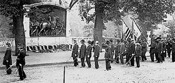

|
Few stories about the Civil War carry more emotional importance for African
Americans than the assault on Fort Wagner, Morris Island, South Carolina on July
18, 1863. The assault was led by the Fifty-fourth Massachusetts Colored
Volunteer Infantry Regiment under the command its twenty-six year old Colonel
Robert Gould Shaw. Like many massed infantry charges, it failed and the soldiers
fell back after suffering heavy losses. But the courage of the Fifty-fourth's
African American troops and the heroic death of Colonel Shaw made the regiment
instantly famous, and its history the subject of poems, songs, books,
documentaries, and a movie. Augustus St. Gaudens, a well-known American
sculptor, designed a beautiful monument to honor the regiment that was unveiled
in Boston in 1897. Ralph Waldo Emerson wrote a poem that is inscribed on the
monument's granite base: "So nigh is grandeur to our dust, So near to God is
man, When Duty whispers low, THOU MUST, The youth replies, I can."

An artist's depiction of the Fifty-Fourth Massachusetts
charge on Fort Wagner
|
The origins of the Fifty-fourth lie with Massachusetts' wartime abolitionist
governor, Republican John A. Andrew. His dream was to see African American
regiments in battle, fighting for their rights as citizens and their dignity as
men. He wanted to prove wrong the commonly held stereotype of black incapacity
to train and fight as soldiers. Andrew had plotted and agitated for an all black
regiment from the beginning of the War, to no avail for nearly two years. But
finally the Emancipation Proclamation, issued on January 1, 1863, made the
enrollment of African American soldiers possible. The majority of African
American regiments were organized under the auspices of the federal government
and were called the United States Colored Troops. Three colored regiments,
however, were raised like the majority of white regiments, by state. Two were
from Massachusetts and one from Connecticut. The 54th was the first of the
three.
In early January of 1863 Andrews received permission from President Lincoln
and Secretary of War Stanton to raise an all-black Northern regiment from men
living in the Bay State. For the officers, Andrew was required to search for
whites only. Lincoln had refused his request to commission black officers in
fear that Northern public opinion would not support that advancement. Andrew was
disappointed but did what he thought was the next best thing: recruit officers
from an anti-slavery background. "Such officers," Andrew explained, "must be
necessarily gentlemen of the highest tone and honor; and I shall look for them
in those circles of educated Anti-Slavery Society, which next to the colored
race itself have the greatest interest in the success of this experiment." True
to his words, Andrew offered the colonelcy of the regiment to Bostonian Robert
Gould Shaw of the Second Massachusetts, with the lieutenant colonelcy going to a
captain of the Twentieth Massachusetts, Norwood Hallowell of Philadelphia. Both
were sons of prominent abolitionist families. Other white officers included
Lieutenants Edward Emerson and Wilkie James, and Captains Luis F. Emilio and
Cabot Russel.
It soon became clear that Massachusetts alone could not begin to fill the
regimental requirement for 1,000 men. Andrew formed a committee of concerned
citizens, headed by George L. Stearns, a wealthy Boston industrialist, to raise
money for the hiring of speakers who would travel across the North to recruit
for the regiment. Andrews needed the wholehearted support of the black Northern
leadership for this task, and he received it. William Wells Brown, John Mercer
Langston, Martin R. Delany, Robert Purvis, Henry Highland Garnet, and Frederick
Douglass all persuaded men from the tiny Northern population of free blacks to
become Union soldiers. In a stirring speech, Douglass explained to his audiences
why African Americans should fight in what had previously been a white man's
war: "Once let the black man get upon his person the brass letters, U.S., get an
eagle on his button and a musket on his shoulder and bullets in his pocket; and
there is no power on the earth or under the earth which can deny that he has
earned the right of citizenship in the United States." The recruiters had other,
more tangible, rewards to offer, namely a generous bounty, $8.00 per month
salary from the state, and $13.00 per month salary from the federal government,
the same as for white soldiers.
By February of 1863, volunteers were pouring into the Fifty-fourth's training
camp in Readville, near Boston. The bulk of them hailed from Massachusetts,
Pennsylvania, New York, Ohio, Michigan, Illinois, and Indiana. There were more
than 1,000 men; the rest filled up the ranks of the Fifty-fifth Massachusetts
Colored Regiment. The men of the Fifty-fourth represented the cream of the black
Northern society. Most could read and write, and many were married with
families. They were barbers, cooks, teamsters, farmers, laborers and students.
Pennsylvanian George E. Stephens was a cabinetmaker, while Joseph Sulsey from
New Jersey was a dentist. The vast majority of enlisted men in the Fifty-fourth
were working class. More than a quarter were born into slavery, and their
average age was 24 years. Several men achieved distinction as noncommissioned
officers. One of the two sons of Frederick Douglass who volunteered for the
Fifty-fourth was Sergeant Major Lewis Douglass, the highest-ranking
noncommissioned officer in the unit. Sergeant William H. Carney of New Bedford,
Massachusetts, won the Congressional Medal of Honor for his courage in rescuing
the regimental flag at Fort Wagner, and Sergeant Robert J. Simmons of New York
was also cited for his bravery in that battle.
The young men in the 54th naturally shared a sense of pride in themselves and
their mission, which was to serve as an example for all other black units. No
expense was spared for the Fifty-fourth. They received uniforms, shoes, rifles
and a great deal of training. Although difficult and sometimes discouraging, the
effects of discipline and daily drill made the Fifty-fourth come together as a
group. Thousands flocked to view their dress parades that demonstrated the
capability of the black man to be a soldier. A great disappointment occurred
when the federal government went back on its promise to pay African American
soldiers equally for their service. White soldiers received $13.00 per month in
addition to clothing; black soldiers received $10.00 per month from which they
were expected to deduct $3.00 for clothing. Most of the enlisted men in the
Fifty-fourth refused to accept their pay until Congress corrected the injustice
in early 1865.
After several months of training, orders arrived in May of 1863 requiring the
Fifty-fourth Massachusetts to report to Major General David Hunter, commander of
the Department of the South, in Hilton Head, South Carolina. Before they left, a
huge parade was held in honor of the Fifty-fourth in Boston. In his parting
words, Governor Andrew's said "I know not...when, in all human history, to any
given thousand men in arms there has been committed a work at once so proud, so
precious, so full of hope and glory as the work committed to you." From the
Boston harbor, the men of the Fifty-fourth sailed down to the South Carolina
seacoast and disembarked at St. Simons Island. The regiment was to take part in
a movement of Union forces to seize Fort Sumter and conquer Charleston, South
Carolina, where the rebellion had begun. Eager to participate in combat action,
the men of the Fifty-fourth were instead relegated to labor duties as May turned
into June and July. Colonel Robert Gould Shaw was furious and began a letter
writing campaign to members of his influential family, who in turn, forwarded
his letters to President Lincoln and other major political leaders. For Shaw,
the reputation of black units would be irreparably harmed if the flagship
regiment did not experience combat, and soon.
Finally, on July 16, 1863, three companies of the Fifty-fourth were ordered
to proceed to nearby James Island where they met, fought, and defeated a much
larger Rebel force. Exhausted but extremely proud, the men, now joined by the
rest of the regiment, marched straight to Morris Island. The island was the site
of battery Wagner, one of the forts that offered protection to Charleston.
Arriving with their colonel on the morning of July 18th, the men of the 54th
learned that heavy federal artillery had been shelling Fort Wagner for hours.
Wrongly assuming that the Confederates within the battery were wounded, killed,
or demoralized, the Federal commander planned an assault for that evening.
Colonel Shaw reported for duty, and was asked by the commanding general if the
Fifty-fourth would consider leading the infantry charge. Shaw did not hesitate
in accepting, and was pleased that the good fighting reputation of his men had
already reached the generals' ears. "I trust God will give me the strength to do
my duty," he confided to a friend.
|

Veterans of the Fifty-Fourth Massachusetts at the 1897
unveiling of a monument to them and their leader, Col. Robert Gould Shaw.
|
Shaw positioned his regiment at the front of the line, and as they marched up
the shore the men were cheered loudly by thousands of Union soldiers who were to
follow them in battle. Shaw made a speech in which he told the soldiers to
"prove themselves as men." The signal to begin the charge was given, and Colonel
Shaw led the Fifty-fourth to the top of the fort, where an enemy bullet killed
him. Nearly half of the regiment made it inside the fort, and the soldiers
outside held their ground for over an hour. Shortly after, the Federals were
forced to withdraw, paying a heavy price for the failed assault. Seventy-five
men of the Fifty-fourth died at the battle of Fort Wagner, including Shaw and
two other officers; overall the unit's casualty rate was 272 out of 650 men.
Total Union losses were also severe: 1,505 dead, wounded, or captured, while the
Rebels lost 174 men. Charleston was not captured until the end of the war.
The performance of the Fifty-fourth was widely covered by the Northern press.
All agreed that Colonel Shaw and his men, both officers and enlisted, had
acquitted themselves with an impressive display of courage and daring.
Overnight, the regiment became a powerful symbol for African American manliness
and demonstrated the capability for citizenship. After Fort Wagner, the men of
the Fifty-fourth Massachusetts were used in campaigns in Florida, most notably
the Battle of Olustee, waged in early 1864. In total, they fought in four
battles and several skirmishes. When the war ended, a little over half of the
regiment returned to Boston. The men of the Fifty-fourth happily resumed their
normal lives, confident that they had fulfilled the bright promise of the
regiment envisioned by Governor Andrew and others. Veterans of the Fifty-fourth
commemorated their wartime achievements by voting Republican, and many joined
the Grand Army of the Republic. The fight for justice and equality for African
Americans was not by any means secured after the Civil War, but the soldiers of
the Fifty-fourth Massachusetts Colored Regiment advanced the cause considerably.
Source: Joan Waugh, ed., Facts on File Encyclopedia of American
History: Civil War and Reconstruction, 1856 to 1869 (New York: Facts on
File, 2003), 124-26.
|